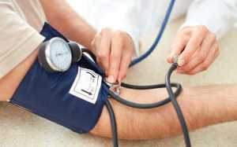

Чим старша людина стає, тим частіше в його лексиконі звучить словосполучення «артеріальний тиск». Хтось вимовляє його зі знанням справи, а хтось просто за компанію. Щоб зрозуміти, що це таке, чому тиск буває зниженим або високим, ніж це загрожує організму - потрібно бути непоганим фахівцем в галузі медицини. Але мати загальні знання під силу будь цікавиться людині. У статті спробуємо розібратися, що ж таке артеріальний тиск і чому про нього так багато всі говорять.
Що таке артеріальний тиск?
Артеріальний (АТ) - це тиск всередині великих судин, званих артеріями, створюване потоком крові. У сукупності воно має значення навіть в дрібних капілярах. Протягом дня може змінюватися, виходячи з навантаження, загального стану організму і навіть від погодних умов. Розрізняють два кордони показників: верхня - в момент максимального скорочення серцевого м'яза, нижня - рівень тиску крові, коли розслабляється по максимуму.
Вимірюють АТ у стані спокою організму. Після випитої кави або викуреної сигарети повинно пройти не менше години. У момент вимірювання руку потрібно розслабити і зручно розмістити на столі. Манжетку надягають трохи вище ліктьового згину. Після нагнітання повітря доктор поступово починає здувати манжетку і засікає на приладі тон, який вказує на параметри АД. Відповісти на питання, який тиск вважається нормальним, відразу не можна, так як індивідуальні особливості кожної людини можуть позначатися на показниках.
Які показники тиску вважаються нормальними
Існують загальноприйняті медичні стандарти показників нормального тиску, які були прийняті кілька десятиліть тому. Сучасний темп життя вносить свої корективи, середній вік людей, які страждають підвищеним тиском, помолодшав. На жаль, вже не рідкість випадки інсульту або інфаркту у молодих людей як наслідок різкого підвищення артеріального тиску. Проте, медики розрізняють групи людей, де норми тиску і пульсу за віком мають свої відмінності.
Норма артеріального тиску для дорослих
Нормальний тиск і пульс у дорослої людини, якщо він здоровий, не повинні перевищувати норму: верхня межа АТ не більше 130 мм рт.ст., нижня - не більше 85 мм рт.ст., а пульс у стані спокою 60-80 ударів в хвилину. Не варто забувати, що у кожної людини норма своя, статева приналежність теж впливає на ці дані. У чоловіка і жінки одного віку і схожим станом здоров'я, показники будуть відрізнятися, у жінок на кілька одиниць вони будуть нижчими.
З віком норма АД трохи підвищується. Якщо для юнака двадцяти років стандартним буде показник 125/75, то нормальний артеріальний тиск в 50 років буде - 135/85. З віком у людини накопичуються захворювання, які теж мають вплив на давленіе.Существуют основні вороги здоров'я, які підвищують артеріальні показники:
- Зайва вага.
- Часте куріння і зловживання алкоголем.
- Генетична спадковість.
- Гіподинамія, відсутність необхідного фізичного навантаження.
- Нервові перевантаження.
Постійне, навіть незначне підвищення АТ, загрожує розвинутися в ішемічну хворобу серця. Особливу увагу на слід звертати людям, страждаючим цукровим діабетом і захворюваннями нирок. Якщо стежити за своїм здоров'ям протягом усього життя, давати помірні навантаження, тренуючи тим самим не тільки серцевий м'яз, але і підвищуючи еластичність судин, неприємності у вигляді підвищеного артеріального тиску можливе уникнути.
Для дітей і підлітків
Під час формування організму, з моменту народження дитини і до досягнення нею вісімнадцятирічного віку, йде безперервний процес становлення індивідуальної норми показників тиску. У дітей АД трохи нижче, ніж у дорослих, тому що дитячі судини більш еластичні. Чим молодша дитина, тим нижче можуть бути показники. У зв'язку з фізіологічними коливаннями медикам складно встановити нормативні кордону артеріального тиску.
Наприклад, у однорічних дітей нормою вважається 95/65 мм рт.ст .. Який нормальний тиск у дітей шкільного віку, можливо дізнатися тільки після уточнення: скільки повних років, наявність фізичного навантаження, в якому періоді статевого дозрівання перебуває дитина. Показники можуть коливатися від 100/70 до 120/75 мм рт.ст .. У віці 12-14 років у дівчаток артеріальний тиск вищий, ніж у хлопчиків, це пов'язано з гормональним стрибком. Після 16 років хлопчики випереджають дівчат за цими показниками.
У вагітних
кров'яний тиск жінок в цікавому положенні прямо пов'язане з відсутністю загрози життю майбутньої дитини і спокійним протіканням періоду вагітності. Головним для майбутньої мами і плоду є плацента, яка представляє собою судинний орган. При зниженні АТ жінка не тільки відчуває запаморочення і слабкість, в такий момент кровотік до дитини сповільнюється і він залишається без кисню.Різке підвищення тиску загрожує відшаруванням плаценти, передчасними пологами, іноді втратою дитини. Тому дуже важливо стежити за показаннями тиску (кожної вагітної слід мати тонометр будинку). Навіть при незначних відхиленнях слід ставити лікаря до відома, щоб уникнути негативних наслідків, тому що ці параметри характеризують якість функціонування всього організму.
Для літніх людей
Потрапивши в кабінет лікаря, людина похилого віку може почути про те, що нього високий тиск. Не потрібно відразу панікувати і починати пити ліки, не впізнавши, яке повинно бути насправді. Варто проконтролювати процес протягом двох-трьох місяців. Якщо протягом цього часу дані залишаться завищеними, від 140/90 і більше, доктор поставить діагноз «артеріальна гіпертонія» або «артеріальна гіпертензія» і призначить лікування. Нижче цього показника для літньої людини вважається нормою.
У ситуаціях, коли стрибок тиску дуже високий і існує загроза інсульту або інфаркту, медичні заходи вживаються негайно. Літні люди, які страждають гіпертонією, повинні постійно контролювати артеріальний тиск, щоб уникнути кризу і приймати призначені ліки для профілактики. Важливо не приймати самостійних рішень, без лікарського обстеження та рекомендацій, тому що це загрожує непоправними наслідками для організму.
Таблиця норми артеріального тиску за віком
Наведена нижче таблиця становить середньостатистичні дані, що не враховують індивідуальні особливості організму людини, фактори, що впливають на відхилення від норми, такі як стрес, висока емоційна збудливість, втома, негативний образ життя. У різних людей одного віку вони можуть відрізнятися в залежності від того, чи займаються люди спортом і чи дотримуються режим харчування.
Вік | 0-1 рік | 1-10 років | 10-20 років | 20-40 років | 40-65 років | більше 65 років |
Верхнє АД | 75-95 | 90-100 | 100-120 | 120-130 | До 140 | 150 |
Нижня АД | 50-65 | 65-70 | 70-75 | 70-80 | До 90 | 90 |